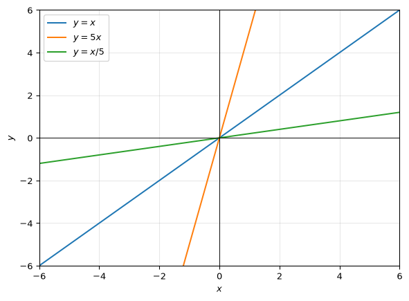
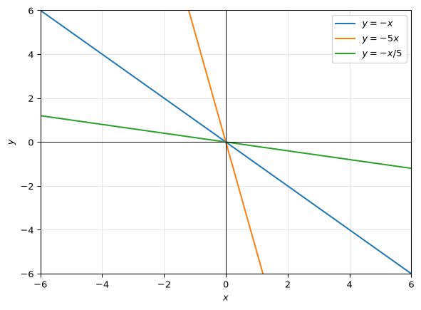
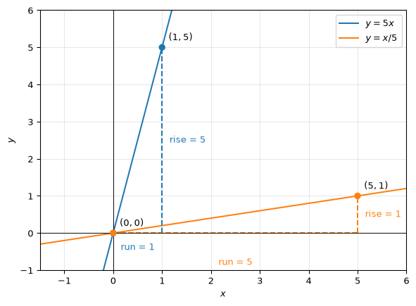
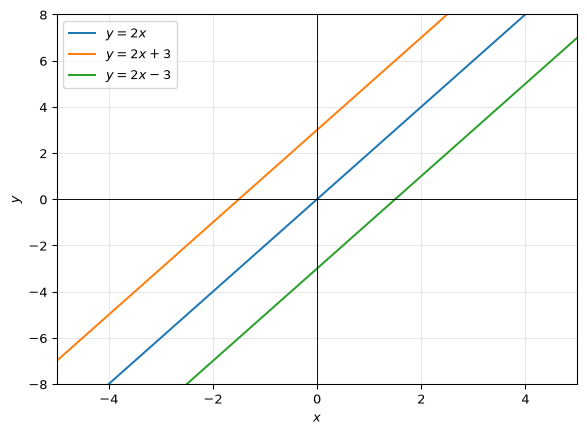
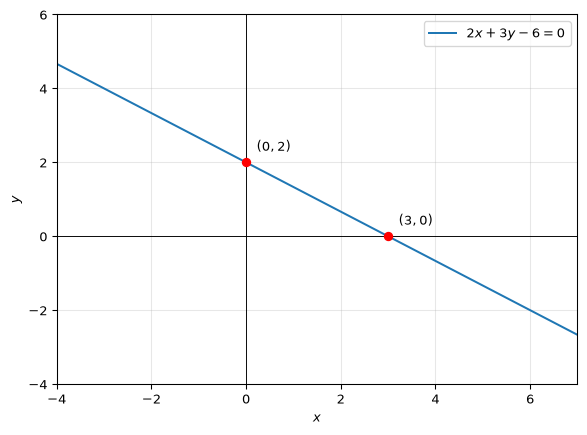
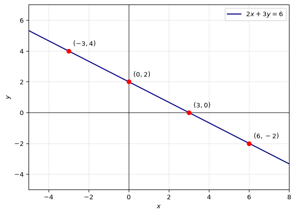
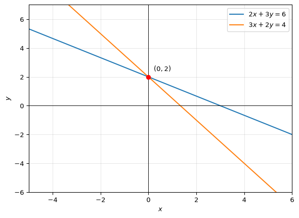
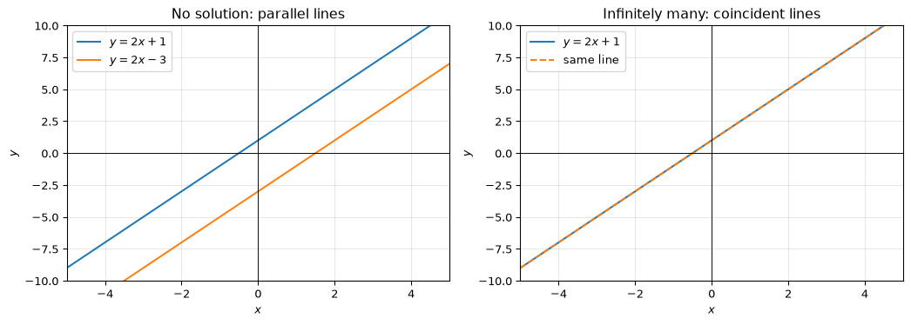
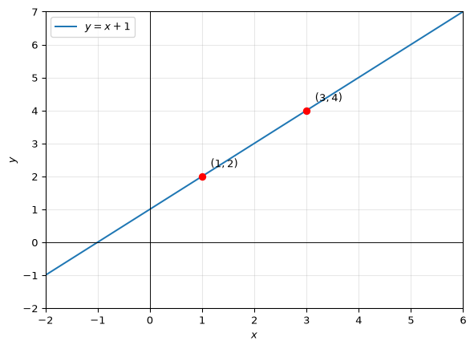

Revision of Linear Equations
Introduction
These questions are aimed at developing one central idea: a linear equation can be understood algebraically and geometrically. Algebraically, it describes numbers that make an equation true. Geometrically, it describes points on a straight line.
We are considering linear equations in two variables. In general, such a linear equation describes the relationship between two variable, typically x and y. One of the simplest such relationships can be described by the equation y=mx, where m is a constant. The other simple relationship can be y = x + c, where c is a constant. When you combine these two, you get the general equation of a linear relationship between x and y, which is y=mx+c (sidenote: Do you notice and understand that no other linear relationship between x and y can exist? or that all linear relationships between x and y can be expressed in this form?).
What does the equation y=mx+c mean? What do m and c represent? How can we interpret this equation geometrically? How can we interpret this equation algebraically? We can proceed to understand these by considering some specific examples of linear equations, the kind of numbers that satisfy them, and the geometric representation of these numbers.
We will also consider the general equation of a straight line in the form ax + by + c = 0. How can we interpret this equation geometrically? How can we interpret this equation algebraically?
1. Equations of the type y=mx
Consider the equations y=x, y=5x, and y=x/5. We can plot each equation by taking any value of x and calculating the corresponding value of y. For example, for y=x, if x=-2, then y=-2; if x=0, then y=0; and if x=2, then y=2. This gives us the points (-2,-2), (0,0), and (2,2) to plot. Remember that the x values for the other equations are also chosen arbitrarily. The points to plot for each equation are shown in the table below.
| Equation | Points to plot |
|---|---|
| y=x | (-2,-2),(0,0),(2,2) |
| y=5x | (-1,-5),(0,0),(1,5) |
| y=x/5 | (-5,-1),(0,0),(5,1) |
All three lines pass through the origin. They rise from left to right. The line y=5x is steepest, while y=x/5 is least steep.
Now let’s do the same with y=-x, y=-5x, and y=-x/5. All these lines slope downwards from left to right.

You can see that changing the value of m changes the steepness of the line. The absolute value of m measures steepness, while the sign of m indicates whether the line slopes upwards or downwards. The value of m is called the gradient (or slope) of the line.
You can also see that the gradient is the ratio of the change in y to the change in x between any two points on the line. For example, for y=5x, the change in y between the points (0,0) and (1,5) is 5-0=5, while the change in x is 1-0=1. Hence the gradient is \frac{5}{1}=5. For y=x/5, the change in y between the points (0,0) and (5,1) is 1-0=1, while the change in x is 5-0=5. Hence the gradient is \frac{1}{5}.
So if points (x_1,y_1) and (x_2,y_2) are on the same line, the gradient can be calculated from the formula
Gradient =\frac{y_2-y_1}{x_2-x_1}
The graph below shows the rise and run used to calculate the gradients of y=5x and y=x/5.

2. Equations of the type y=mx+c
Consider the equations y=2x, y=2x+3, and y=2x-3.
When you plot these three lines, you will see that they are parallel. From the equations themselves, you can see that all three lines have the same gradient, 2.
What does adding or not adding a constant term do to the line? The constant term shifts the line vertically: y=2x+3 is 3 units above y=2x, and y=2x-3 is 3 units below it.
If you substitute x=0 into each equation, you will get the point where each line crosses the y-axis. This point is the y-intercept of each line. The y-intercepts of the three lines are 3, 0, and -3, respectively. Notice that these are the values of the constant term c in each equation.

3. Interpreting y=mx+c
In y=mx+c, m is the gradient. It determines the steepness of the line and whether it slopes upwards or downwards. A positive gradient gives an upward-sloping line; a negative gradient gives a downward-sloping line. The gradient can be calculated from any two points on the line using the formula:
m=\frac{y_2-y_1}{x_2-x_1}
The value c is the y-intercept because setting x=0 gives y=c.
4. Equations in the form ax+by+c=0
Rearrange:
2x+3y-6=0\qquad 3y=-2x+6, y=-\frac{2}{3}x+2.
We can read the gradient and y-intercept, directly from this form:
m=-\frac23, \qquad c=2.
Now let us try plotting this line. At x=0, we have y=2, so the line crosses the y-axis at (0,2). Setting y=0 gives x=3, so it also passes through (3,0). Plot these two points and join them. Sidenote: Remember that setting x=0 to calculate y (the y-intercept) and setting y=0 to calculate x (the x-intercept) is a standard approach. You can plug any value of x into the equation to get the corresponding value of y, and vice versa.
We can see directly from the graph that the y-intercept is 2. We can calculate the gradient from the two points (0,2) and (3,0) - as -2/3.

In general, for an equation of the form ax+by+c=0, where b\ne0, we can rearrange to get y=-\frac{a}{b}x-\frac{c}{b}.
Thus the gradient is -a/b, and the y-intercept is -c/b.
5. Solutions of a single linear equation
A solution is an ordered pair that makes the equation true. For example, (0,2) is a solution to the equation 2x+3y=6 because
2(0)+3(2)=6.
When you rearrange the equation to solve for y,
y=2-\frac23x.
You can see that for any value of x, there is a corresponding value of y that satisfies the equation. Examples include (3,0), (-3,4), and (6,-2). There are an infinite number of points that satisfy (make it true when substituted into) the equation.
Algebraically, a solution makes the equation true after substitution. Geometrically, it is a point on the line. The complete set of solutions is the entire line.

6. Solutions of two simultaneous linear equations
Consider
2x+3y=6, \qquad 3x+2y=4.
The point (0,2) is a solution to both equations because
2(0)+3(2)=6
and
3(0)+2(2)=4.
Algebraically, a solution to two simultaneous equations is an ordered pair that satisfies both equations at the same time. Geometrically, it is a point common to both graphs. Here the lines meet at (0,2), so the simultaneous solution is unique.

7. Substitution method of solving two simultaneous linear equations
From 2x+3y=6,
x=3-\frac32y.
Substitute into 3x+2y=4:
3\left(3-\frac32y\right)+2y=4, 9-\frac52y=4, \qquad y=2.
Then
2x+3(2)=6\implies x=0.
Therefore
\boxed{(x,y)=(0,2)}.
8. Elimination method of solving two simultaneous linear equations
Multiply the first equation by 2 and the second by 3:
4x+6y=12, \qquad 9x+6y=12.
Subtracting gives
5x=0\implies x=0.
Substitution gives 3y=6, so y=2. Hence
\boxed{(x,y)=(0,2)}.
9. Possible numbers of solutions to two simultaneous linear equations
Considering each linear equation can be represented as a line, there are three possible cases: the lines interesect at a single point, the lines are parallel and distinct, or the lines are coincident. These three cases correspond to one solution, no solution, and infinitely many solutions, respectively.
How do we identify these cases algebraically?
If the linear equations are in the form y = mx + c, then the gradients of the two lines are equal for parallel lines, but the y-intercepts are different. For coincident lines, both the gradients and y-intercepts are equal.
if the two linear equations are in the form ax+by+c=0, the coefficients of x and y are proportional for parallel lines, but the constant terms are not. For coincident lines, all three coefficients are proportional.
For parallel lines, the following condition holds: \frac{a_1}{a_2}=\frac{b_1}{b_2}!=\frac{c_1}{c_2}.
For coincident lines, the following condition holds: \frac{a_1}{a_2}=\frac{b_1}{b_2}=\frac{c_1}{c_2}.
| Relationship | Graph | Number of solutions |
|---|---|---|
| Different gradients | Lines intersect once | One |
| Same gradient, different intercepts | Distinct parallel lines | None |
| Same line | Coincident lines | Infinitely many |
Consider these equations: y=2x+1, \qquad y=2x-3.
The lines are parallel (m values are same but c values are different).
When written in the standard form, the equations become 2x-y+1=0 and 2x-y-3=0. The x- and y-coefficients are proportional, but the constants are not.
Now consider these equations:
y=2x+1, \qquad 2y=4x+2.
The second equation is the first multiplied by 2, so both describe the same line.
When written in the standard form, the equations become 2x-y+1=0 and 4x-2y+2=0. All three coefficients are proportional.
Note: During elimination, 0=5 indicates no solution, while 0=0 indicates infinitely many solutions.

10. Finding a line through two points
A straight line is determined by two distinct points. Consider the points (1,2) and (3,4). The gradient of the line through these two points is:
m=\frac{4-2}{3-1}=1.
Since the general equation of a straight line is y=mx+c, we have y=x+c. To find c, we can substitute one of the points into the equation. Using (1,2):
2=1+c\implies c=1.
Therefore
\boxed{y=x+1}.
We can check this is correct as both points satisfy the equation: 2=1+1 and 4=3+1.

Concluding note
The linear relationship between two variables can be described algebraically and geometrically. Algebraically, it is an equation that describes the relationship between the two variables. Geometrically, it is a straight line on the two dimensional cartesian graph.
The solution set of a single linear equation is the set of all ordered pairs that make the equation true, which is also the set of all points on the line.
The solution set of two simultaneous linear equations is the set of points common to both lines. Depending on the relationship between the two lines, there may be one solution, no solution, or infinitely many solutions.
Since the relationship is between two variables, we can find the relationship, given any two solutions. This can also be thought of as finding the equation of the line through the two points.